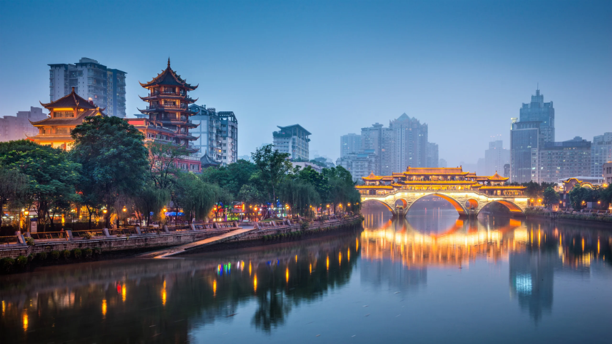
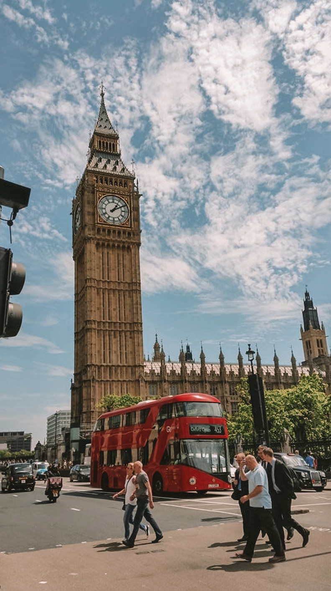

MyTrip
Yellowstone


Geographical Location: North America
Yellowstone is the first national park in the United States. It covers over 2.2 million acres, and provides an opportunity to see wildlife and explore geothermal areas. In fact, Yellowstone contains about half the world's active geysers.
These unique opportunities also bring out a lot of bad decisions among the tourists. Every year visitors injure themselves or the wildlife by getting close to the animals. You can see examples of people making bad decisions by visiting Yellowstone National Park: Invasion of the Idiots, Tourons of Yellowstone, or Cowboy State Daily.
Photo Gallery


New York

Geographical Location:Northeastern U.S.
New York, one of the most prosperous and bustling metropolises in the United States, is often referred to as the "Big Apple." With a population of over 8 million, New York is a melting pot that blends various cultures, languages, and traditions.
This city is renowned for its iconic skyline, bustling streets, and richly diverse cultural scenes. Landmarks such as the Statue of Liberty, Central Park, and Times Square are globally recognized, making New York a popular destination for both tourists and locals. Additionally, New York serves as a global financial hub, home to the New York Stock Exchange and numerous multinational corporations.
Photo Gallery
ChengDu
Geographical Location: Asia
Chengdu, an ancient yet modern city, blends a rich history with contemporary prosperity. The streets exude a unique leisurely atmosphere, and Chengdu locals take pride in their unhurried way of life.
Its culinary culture has earned global acclaim, with hotpot and Sichuan cuisine being particularly enticing. The city harmoniously preserves a blend of old and new, captivating both tourists and residents with its distinctive charm.
Photo Gallery
London
Geographical Location: Southeastern England
London, a city where ancient meets modern, is a global metropolis steeped in history and brimming with diverse culture. Iconic landmarks like Big Ben and the London Eye stand as testaments to its ever-evolving skyline.
This city also boasts world-renowned museums, art galleries, and other cultural venues, attracting visitors from around the globe. In conclusion, with its profound historical heritage, diverse culture, and modern vitality, London has become a highly acclaimed international metropolis.